Apps
Follow a title
This page is the public status board. Store links appear on each card the day a title goes live. To ask about a title, write to the front door and name the app.
Home Apps & Software
The status below is stated title by title, as of November 10, 2026. Orbit is live on Google Play, the house’s first published app. KeyPanel, Check Up!, and Tablets of Destiny are approved on the App Store and pending release, with the release held for the founder’s word. ClearScan and NaijaTax Ledger stand resubmitted to the App Store and in review. Every other title stands at the stage named on its own card.
Except for HearthScreen, made for Android TV alone, the slate is built for Android and Apple iOS. Each app ships only after it passes the house security audit, and its store link will appear on this page when it is live. Images are labeled for what they are: a design preview, a store graphic, an app icon, or an actual screen.
Every title passes the same four gates, in order. The board below shows where each app actually stands, and this page is updated as titles move.
The house gate: accounts, storage, transport, and data practices, audited before anything ships.
Store copy, graphics, screenshots, and the privacy policy, prepared and checked.
The audited build goes to Google Play and the App Store for review.
On the store, with its link added to this page the day it lands.
Built titles moving through audit, listing, submission, or release sign-off. They do not share one status: the Now line on each card states the exact stage.
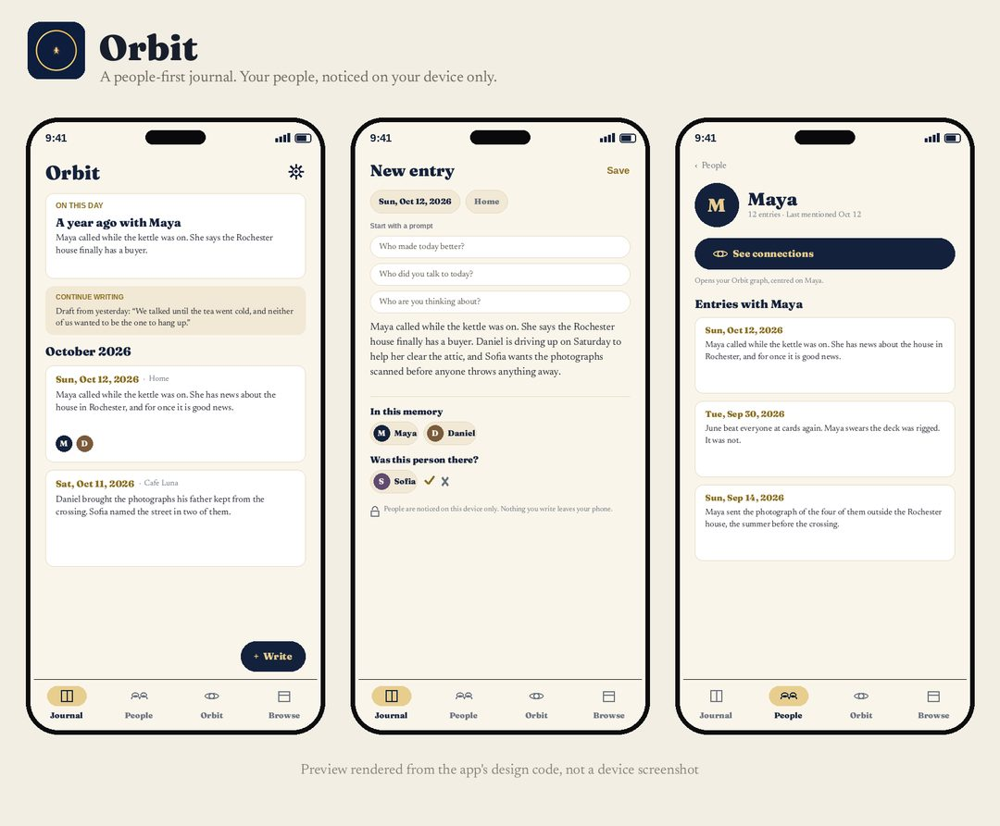
Design preview
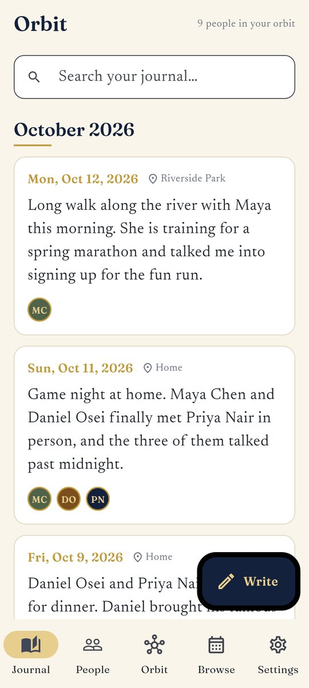
Actual screen from the live Android build, with fictional sample entries
A private journal that organizes memories around the people in them. Local-first and encrypted, built to keep your words on your device.
Now: Live on Google Play since November 1, 2026.
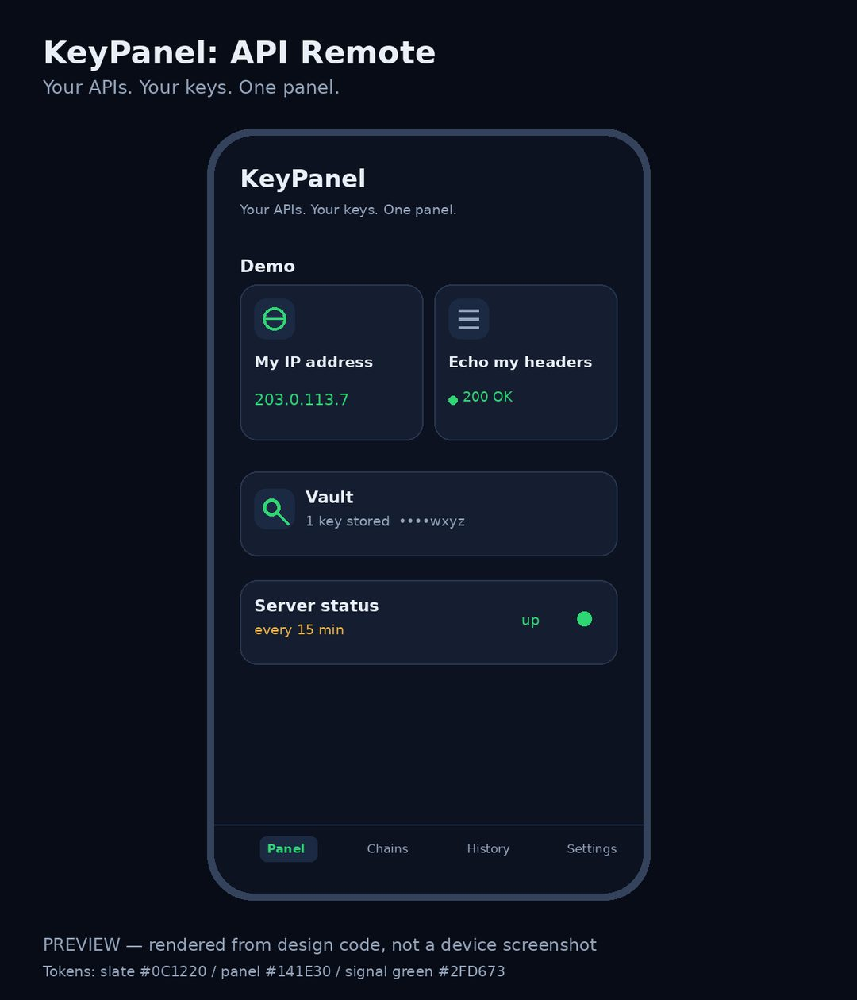
Design preview
Your APIs, your keys, one panel. One-tap controls for your own services, with no cloud in between.
Now: Approved on the App Store and pending developer release. Release is held for the founder’s word.
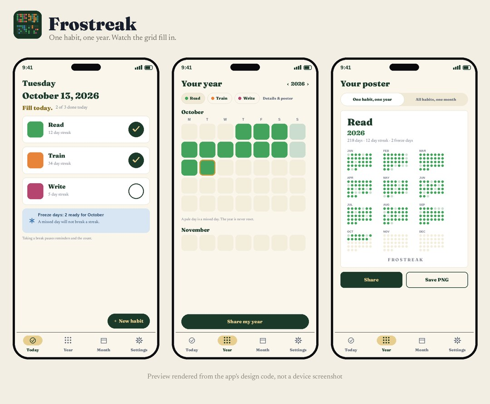
Design preview
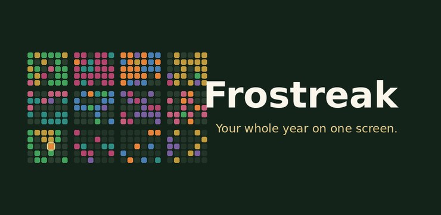
Store feature graphic
A habit tracker whose hero is your whole year on one screen. Check off today in seconds and watch the grid fill in.
Now: Listing package complete, and the signed release candidate is built. Store records stand in both stores. The release is held on the founder’s word.
App icon
An encrypted vault for passwords, payment card details, identity details, and secure notes, kept on your device. No account, no cloud, and nothing collected. The core vault is free, and its security features are never paywalled; Pro adds unlimited items.
Now: Store records stand in both stores and the privacy policy is published. Submission follows the founder’s final checks.
Design preview
A card game of Babylonian myth from the world of Gods of the Clay Tablets. You hold the Tablet of Destinies: rule Babylon and keep the cosmos in balance. No gambling mechanics. No ads. No in-game currency.
Now: Approved on the App Store and pending developer release. Release is held for the founder’s word.
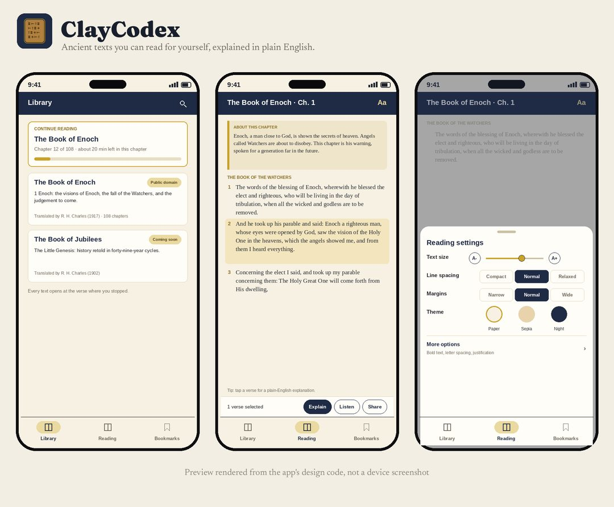
Design preview
A calm library of ancient texts in public-domain translations, with explanations and guided reading plans. The texts themselves are free to read.
Now: Security audit passed. The listing package is next. Store records stand in both stores.
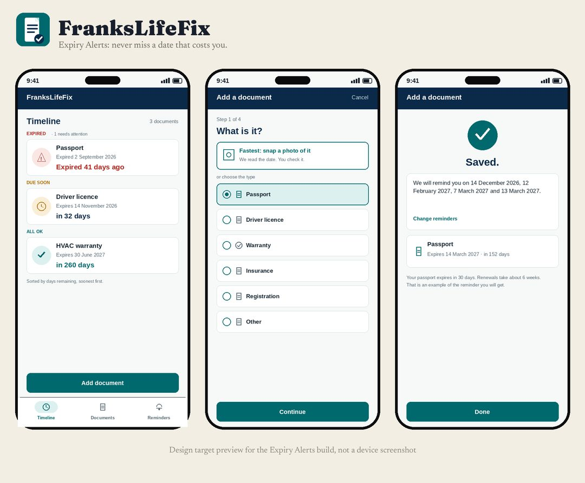
Design preview
A practical problem-solver for everyday life: describe a problem, get a clear plan, and set reminders so the fix actually happens. No account is needed to start; an account is optional.
Now: The listing package describes the app as built. Store records stand in both stores.
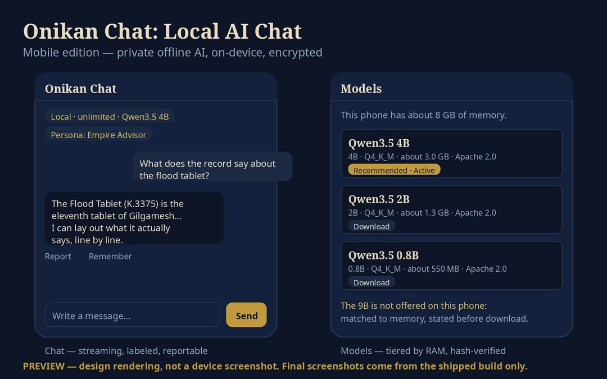
Design preview
Private AI chat that runs on your own hardware. Local models on your device, your own keys for anything else, and conversations that stay yours.
Now: Security audit passed. Feature completion is under way before the listing package. Store records stand in both stores.
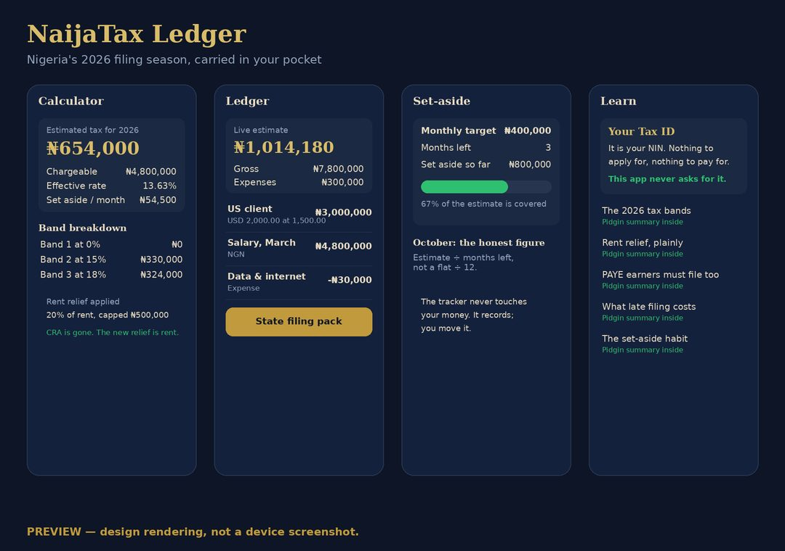
Design preview
Nigeria's 2026 tax rules, made plain. Track income through the year, see a running estimate, and be filing-ready by March 31.
Now: Version 1.1 was resubmitted to the App Store on November 9, 2026 and is waiting for review. On Google Play a listing update is in review; release is held for the founder’s word.
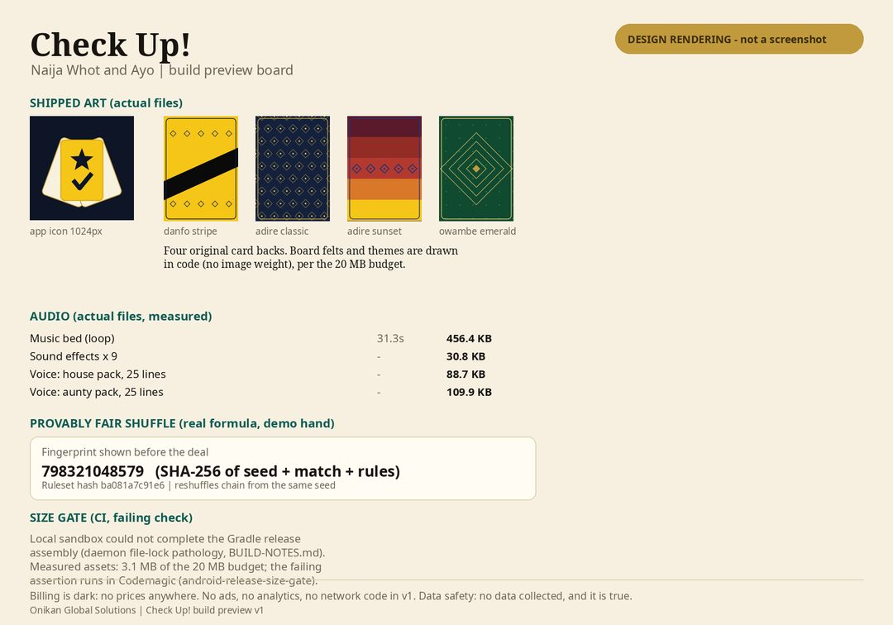
Design preview
Naija Whot and Ayo on one table, against the computer or pass-and-play with friends. The shuffle is provably fair, and any match can be verified after the fact.
Now: Approved on the App Store and pending developer release. The privacy policy is published. Release is held for the founder’s word.
A document scanner that turns paper into clean, searchable PDFs. Scan, straighten, filter, and sign, all on your device: no account, no cloud, nothing collected.
Now: Version 1.1 was resubmitted to the App Store on November 9, 2026 and is waiting for review. On Google Play the build stands on a closed testing track, held for the founder’s release word.
Earlier in the pipeline, shown for the record.
A 3D open-world life game set in Abuja, built in Unreal Engine. One city, ten districts, a full cast, and the wahala economy: money, family, status, and survival. The first release is the Kubwa district built to full standard; the other nine districts follow as updates.
Now: In active development. The vision frames below show the standard the game is being built to. Not yet released in any store.
App icon
In developmentA calm, ad-free home screen for Android TV, with a Senior Mode that keeps everything big, simple, and easy to read. The core is free; a subscription unlocks the extras.
First version code-complete in October 2026; the release build is not yet verified. Store records stand in both stores.
These are concept vision frames for the game now in development: the Abuja we are building toward, shown at the standard the finished game is being built to. They are not screenshots of a finished game.
Vision frames, October 2026. Soft Life: Abuja is one game, in development in Unreal Engine. Its first release is the Kubwa district; the remaining districts arrive as updates.
An AI front desk for local service businesses. It answers calls and takes booking requests, and a person confirms every booking.
Pilot build complete, and the phase-one gates pass. A live test call is the remaining gate before any client use. Not yet live for clients.
A calm, ad-free briefing on the live world: flights, ships, satellites, earthquakes, wildfires, and weather around the places you watch.
Development milestones M0 to M4 are complete, and the release candidate builds ran on November 1, 2026. Store records stand in both stores.


Starter vocabulary symbols used in the app. Mulberry Symbols by Steve Lee, licensed CC BY-SA 4.0.
In developmentAn offline, symbol-based communication board. Tap symbols to build a sentence, and the device speaks it aloud. The core vocabulary is free.
In active development: the runnable app is complete and the fuller vocabulary build continues. Store records stand in both stores.
Free streaming television from around the world, gathered into one calm app.
In development. Store records stand in both Google Play and the App Store.
Invoicing for solo freelancers, tradespeople, and creators who invoice from a phone. Local-first, with no account and no server: invoices, estimates, branded PDFs, payment tracking, and a year-end summary, all on your device.
The working app is built. Its next stage is parked on a beta gate of 25 committed users from our own lists, and the store listing is its final stage. No store records yet; not in any store.
A health score from 1 to 100 for packaged products, by barcode or photo scan, from a scoring formula published in full. Built on open data and local-first, with lab results shown beside the score, never folded into it.
In active development. The scoring engine is built and proven; the data pipeline and the full app shell are in build. Not yet in any store.
A studio for authors who want their audiobooks narrated in their own voice. Clone your voice once, upload a manuscript, review the narration chapter by chapter, and download finished masters you own outright.
In active development. Testing builds run privately on TestFlight while the first release is finished. Not yet submitted to any store.
An original 3D endless runner: a young courier sprinting through Nigeria, one state per level, each level built around that state’s landmark, terrain, and street life.
The production package is approved, and the Abuja vertical slice comes first. Build work is paused until December 1, 2026; nothing is built yet. Not yet in any store.
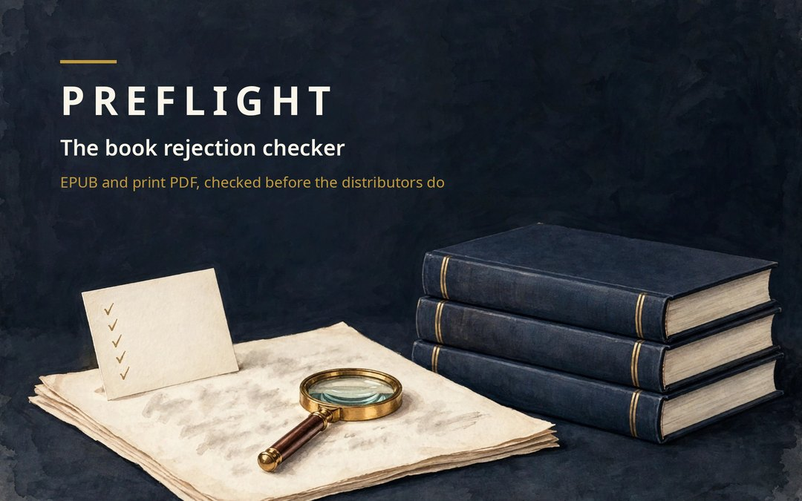
The book rejection checker, for desktop. Preflight checks an EPUB and print PDF against the defect classes that actually get books rejected by Apple Books, Draft2Digital, and KDP: manifest and cover faults, unembedded fonts, and text or objects inside the 0.25 inch safety margin. It runs our production checks plus the official EpubCheck 5.1.0 as a second engine, shows both verdicts side by side, and fixes the mechanical defects on a copy.
Pre-order on Payhip: Formatter Pro, $99 one-time, for unlimited titles, or the Single-Title Pass, $39, for one book.
In active development, sold direct as a pre-order and not through an app store. If we do not ship, pre-orders are refunded in full. Preflight does not guarantee any distributor’s acceptance.
Next steps
This page is updated as titles move. When a title goes live, its store link appears on its card here. To ask about a title, write to the front door and name the app. For services, start at the front door as well. For partnerships and research, use the research desk on the Contact page.